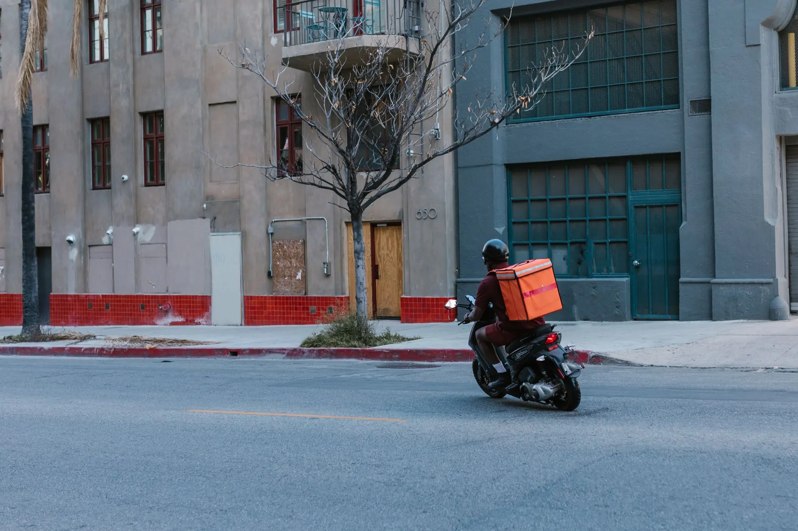

A home é a central de operação vista por dentro. Fio de 1 px no lugar de card, dado em mono, grafite em três quartos da página e o âmbar guardado para o que é ação.
Âmbar sobre grafite mede 10,7:1 e passa AAA. Âmbar sobre branco mede 1,6:1 e reprova — por isso o rótulo do botão âmbar é grafite, nunca branco.
Archivo 900 no display contra IBM Plex Sans 400 no corpo — salto de 500 no peso e de 7,4x no tamanho. O itálico é exclusivo do H1: repetido no H2 deixaria de ser gesto.
Central de entregadores sob demanda para o pequeno comércio da Zona Leste. Você não precisa manter frota para entregar no mesmo dia.

Toda entrega fecha com foto e assinatura de quem recebeu.